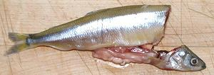

This fish, found from along the Aleutian islands down to Long Beach, in Southern California, is the most economically important smelt in California. It is often called "Day Smelt" because it spawns during the day, in the surf zone, while most smelt spawn at night. These fish can get up to 12 inches long in their southern range, but are usually below 9 inches at the northern range. Average size is about 6 inches. The photo specimen was 6-1/2 inches long and weighing 1.1 ounces.
More on Smelts.

Buying: I only occasionally see these fish in the Asian fish markets I shop at, but the photo specimens were purchased from a Philippine market in Los Angeles (Eagle Rock) for 2015 US $1.99 / pound.
Prep: This smelt is quite a bit bulkier than the Rainbow Smelt,
so is not eaten "heads guts and feathers" as the smaller smelt
traditionally are. They have scales, but these are never scraped off
as they are not noticeable after frying. Preparing these smelt should
take no more than 40 seconds per fish.
Yield: 14-1/4 ounces of whole fresh fish yielded 11 ounces cleaned as noted above, for a yield of 77%.
Cooking: These fish are almost always fried. This can be done in a skillet with only about 3/8 inch depth of oil, turning once, or you can deep fry. I use a light dusting of lightly salted rice flour for maximum fish taste, but other recipes may use a more substantial batter. Note that if you use rice flour, it doesn't really brown, so the fish is ready with a light blonde color. I eat them with a simple dip of my favorite Philippine vinegar with salt.
sf_smeltdz 151026 - www.clovegarden.com